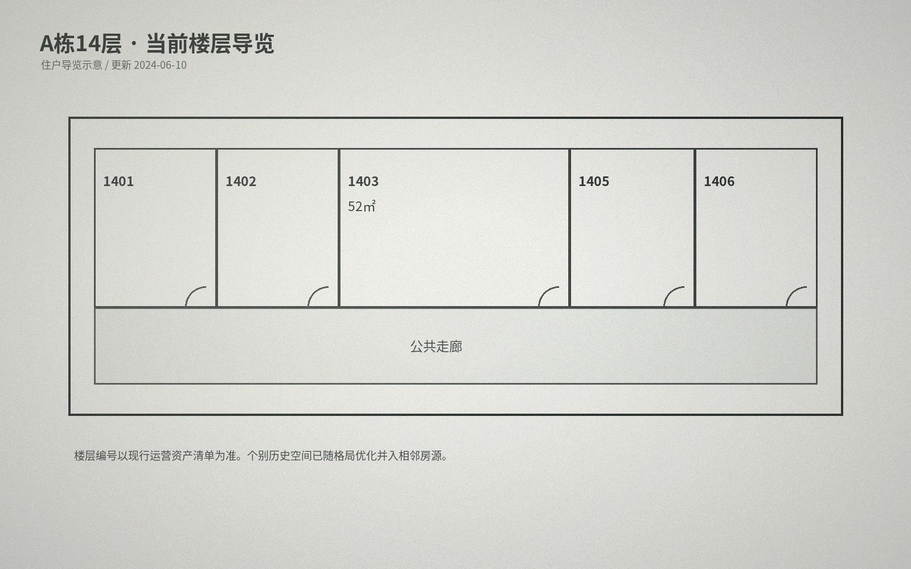

A栋常用户型
| 户型 | 常见面积 | 主要分布 | 备注 |
|---|---|---|---|
| 一室一厅 | 34-38㎡ | 2-16层 | 东向/东南向为主 |
| 两室一厅 | 48-54㎡ | 3-16层 | 部分房源有后期格局优化 |
| 顶层两居 | 56-60㎡ | 17层 | 公共设备层相邻，数量较少 |
A栋 14 层 · 当前导览

| 房号 | 当前面积 | 户型 |
|---|---|---|
| 1401 | 34㎡ | 一室一厅 |
| 1402 | 34㎡ | 一室一厅 |
| 1403 | 52㎡ | 两室一厅 / 格局优化 |
| 1405 | 34㎡ | 一室一厅 |
| 1406 | 34㎡ | 一室一厅 |
编号说明
栖山公寓沿用改造后的资产门牌。由于历史房屋合并、设备空间调整等原因，个别楼层可能存在尾号不连续的情况，当前门牌以运营资产清单为准。
看旧图纸时
消防、施工与住户导览图用途不同：公开导览只显示当前住宅；备案图会保留设备/储藏等非住宅空间。需要核对历史边界时，可查看下载中心的 2018 公开摘录。
户型阅读说明
网站户型图用于租前比较，不替代交房测绘。标注面积为套内使用面积的近似值，墙体厚度、管井、设备检修口和固定柜体会造成少量差异。老楼更新过程中，个别单元曾进行厨房或卫生间布局优化，因此同一面积段也可能出现门洞位置不同的情况。
看房时可重点确认采光方向、可摆放家具的净宽、厨房燃气点位、卫生间地漏以及空调外机位置。涉及公共墙体、结构柱、消防门和竖向管井的部分不得由住户自行拆改。
朝向与通风
A栋东向房源早晨采光较好，临街一侧在工作日晚高峰会有一定环境声；B栋花园向更安静。厨房和卫生间均按原建筑竖向系统排风，住户自行加装设备前应先查看设备说明。
本页面内容最后更新于 2024-06-10